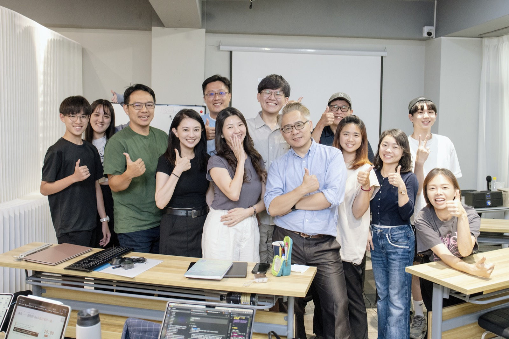
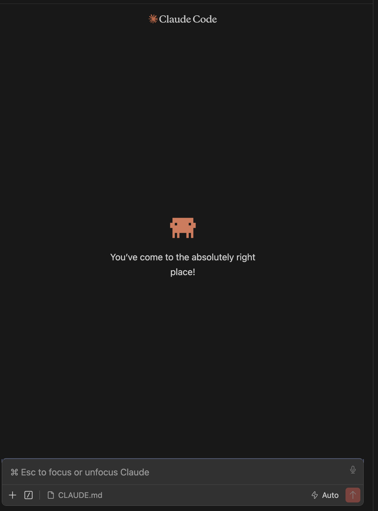
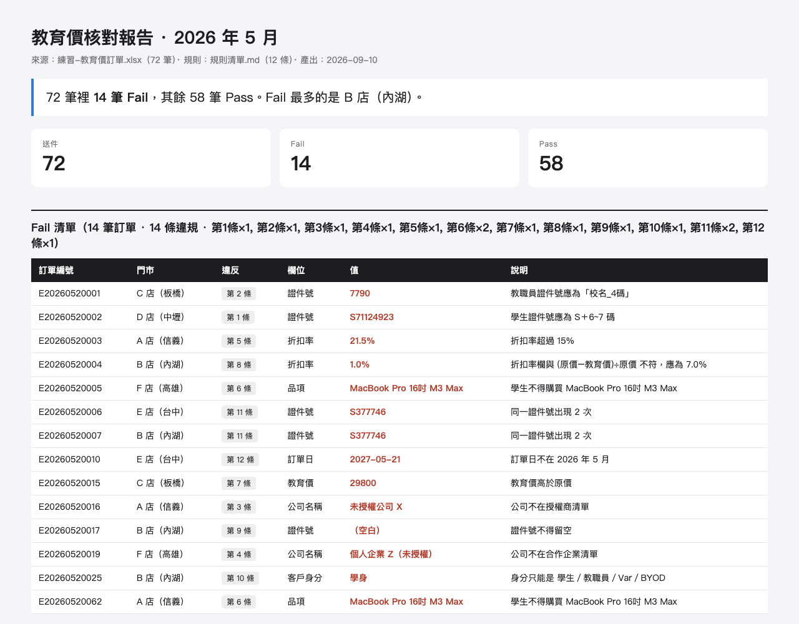
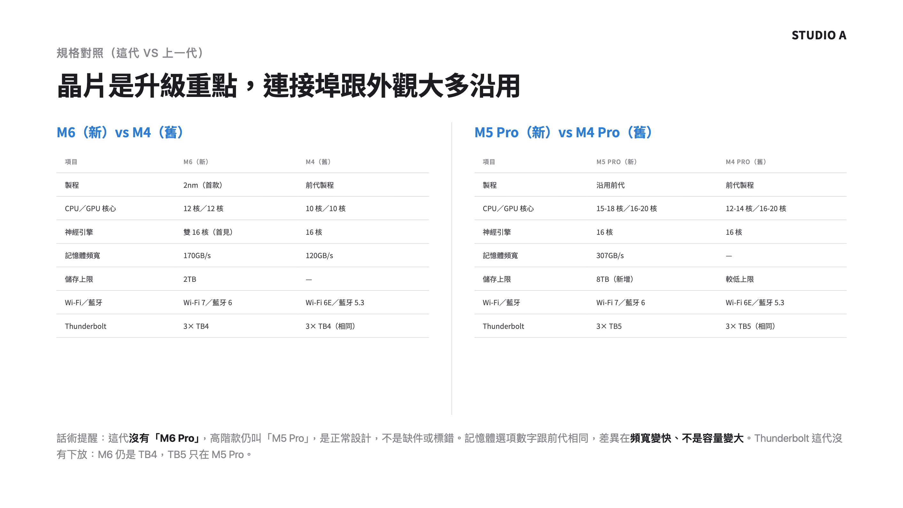
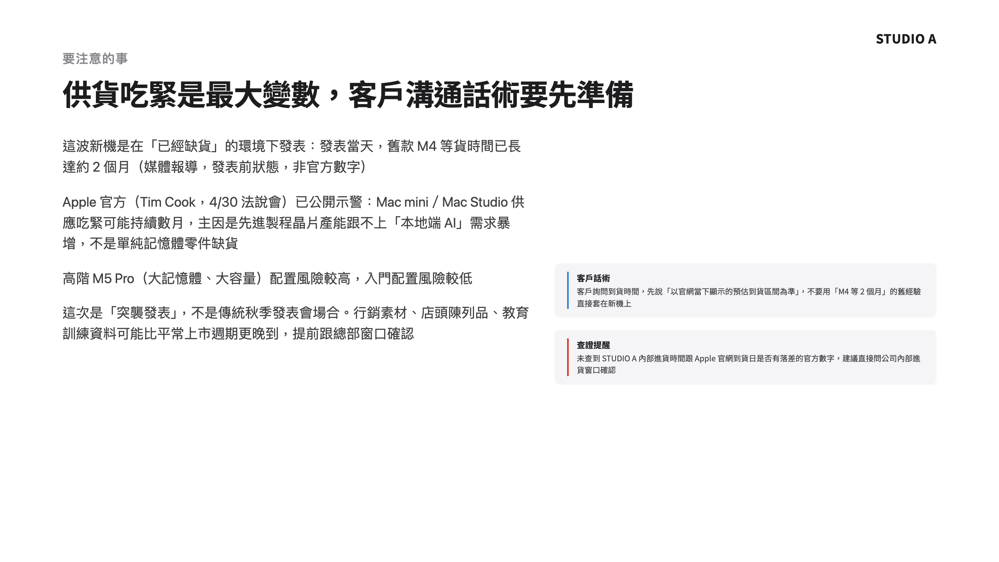
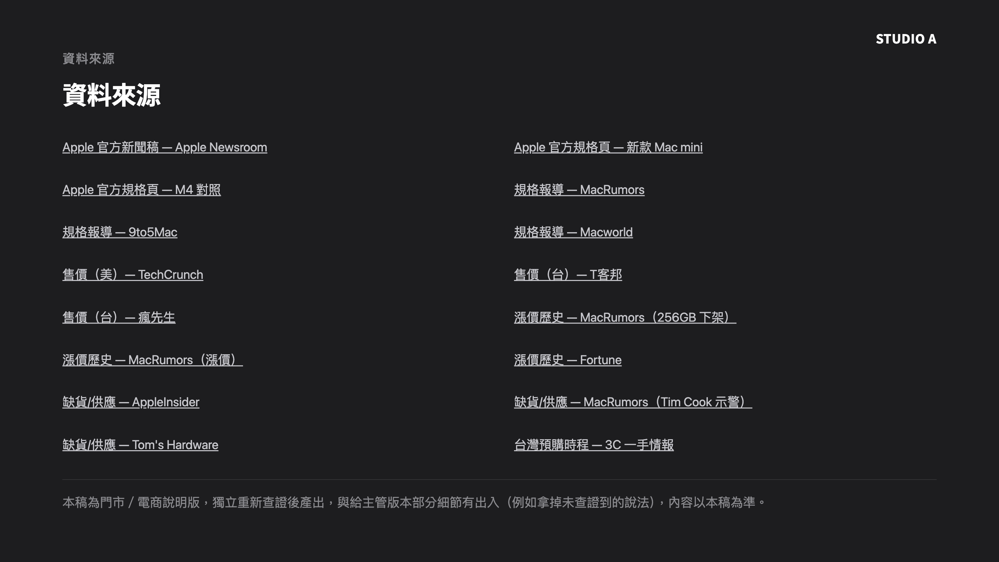
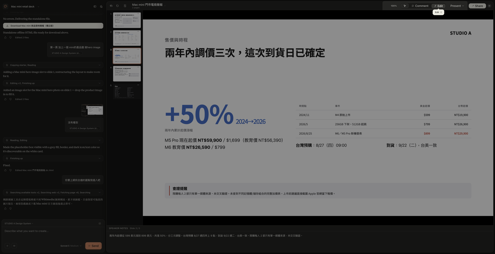
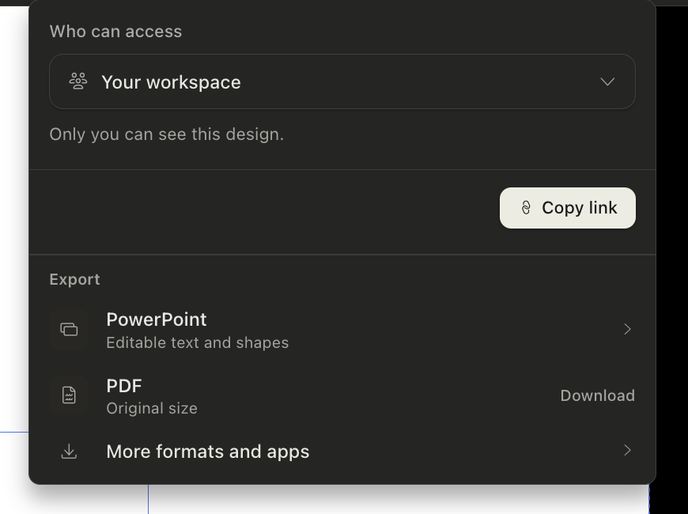
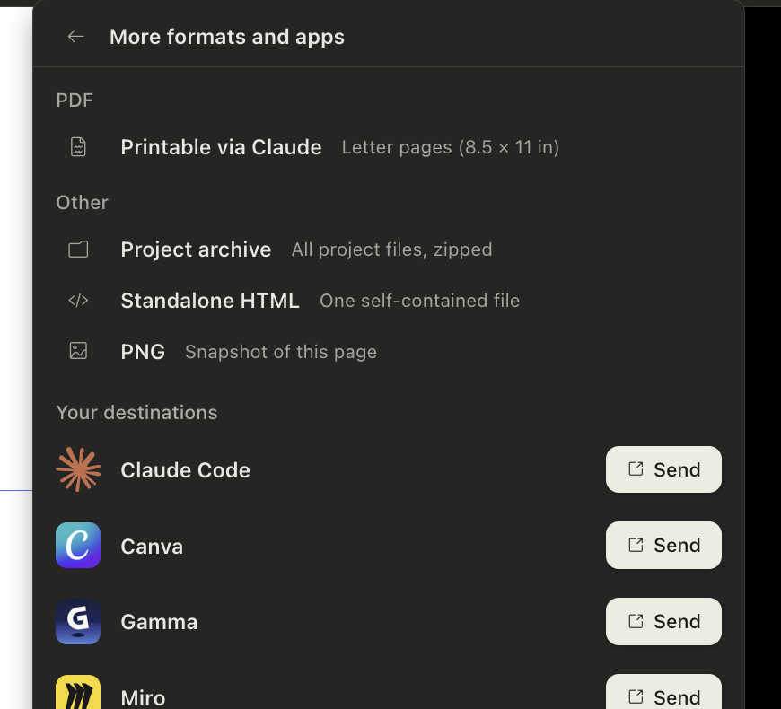

STUDIO A. ／ C 組
2026 / 09 / 11人資部 ＋ 財會部 · 13 人 · 第一堂
建立我們的
AI 工作環境。
AI 工作環境。
一個 AI 工作環境 · 你手上工作的 Efforts · 第一份核對報告 · 一份公司樣子的簡報 · 連上信＋行事曆。
講師 余文皓
匯流顧問有限公司
2026 / 09 / 11
1
STUDIO A · C 組 · 2026/09/11
開場20 MIN
這一年，你的動態牆大概長這樣。
AI 取代
會被淘汰
再不學就來不及
這些工作最先消失
白領首當其衝
不是 AI 取代你，是會用 AI 的人取代你
五年內消失的職業
企業導入 AI 後裁員
Agent 元年
AI 焦慮
人力精簡
一人公司
同事已經在用了
你還在用人工？
提示工程
AI 素養
落後就追不上
不轉型就淘汰
數位轉型
學不完
每週都有新的
先卡位再說
2
開場
開場20 MIN
所以許多人開始追。
問答 · 查東西
ChatGPT · Claude · Gemini · Grok · Perplexity
讀一疊資料
NotebookLM · Perplexity Spaces · 各種 PDF 問答
簡報 · 做圖
Gamma · Canva AI · Napkin · Midjourney · Ideogram
開會 · 逐字稿
Otter · Fireflies · tl;dv · 各家內建的會議摘要
影音 · 配音
HeyGen · Suno · ElevenLabs · CapCut · Runway
寫東西 · 筆記
Notion AI · Heptabase · 各家內建的寫作助手
自動化 · 代理
n8n · Make · Zapier · Manus · 一堆自訂 GPTs
⋯⋯還有上禮拜才存下來、到現在還沒點開的那幾個。
確實都比較快了 —— 但每一個，都只幫我一小段。
3
開場
開場20 MIN
一小段、一小段 ——
下班之後，散在各個地方。
下班之後，散在各個地方。
NotebookLM 讀完的，留在 NotebookLM。Gamma 做的簡報，留在 Gamma。三個月後你要找那份東西 —— 記得在哪一個裡面嗎？
開場 · 20 MIN
4
開場
所以今天建一個工作環境
建一個AI 工作環境。
那二十個入口
在別人的網站上
你去它那裡、用完就走
東西留在它家，不在你家
下次再從頭講一次你是誰
明年換一個新的 —— 重來
一個工作環境
在你自己的電腦裡
它讀得到你的檔案
做出來的東西留在你的資料夾
它記得你是誰
用越久，它越知道你怎麼做事
二十個入口→ 一個地方。
5
開場
STUDIO A.
今天的成果四樣 · 都是你自己的
今天結束，你手上會有這四樣。
不是四份筆記 —— 是四個做好、能繼續用的東西。
13:50 起
AI
工作環境
工作環境
住在你自己電腦裡、讀得到你檔案的一個地方。用越久，它越知道你怎麼做事。
14:15 起
你手上工作
的 Efforts
的 Efforts
出勤稽核、教育價審核、請款核對 —— 每件事一個資料夾，檔案各就各位，它讀得到。
15:35 起
第一份
核對報告
核對報告
一張訂單表、一張規則清單丟進去 —— 它逐筆過，Pass 跟 Fail 分好給你。
15:50 起
公司樣子的簡報
＋ 信、行事曆
＋ 信、行事曆
內容你出、版面它排，生出來就是 STUDIO A 規格。再讓它讀你的信、查你的行事曆。
四樣都是你自己的 —— 不是我 demo 給你看的。
6
開場
我是誰開場前 · 30 秒
我是余文皓。
7 年
工程師
→
10 年
專案經理
→
3 年
數據分析
→
Minerva · MDA
決策分析碩士
→
2025 · 第一批
Claude Code 使用者
→
2026
匯流顧問成立
我在公司裡上了二十年的班 —— Nokia、聯詠、友達，科技業。
2023 年邊上班邊唸碩士，整個過程跟 AI 一起做。2025 年離開公司。
Claude Code 第一批使用者 —— 拿它做產品、管公司、也管生活。今年成立匯流顧問。
Anthropic 官方認證 ＋ 官方夥伴
個人
Claude Certified Architect – Foundations
公司
Claude Partner Network · 匯流顧問有限公司



新工具還是會一直出 —— 我已經不追了。今天之後，你也不用。
7
開場
輪到你一句話 · 互相認識
開始之前 —— 一句話，讓大家認識你。
說兩件事
你的名字，
再加一句話。
再加一句話。
A
今天想帶走什麼 —— 手上卡住的那件事。
B
用過 AI 嗎 —— 哪些工具、用起來怎麼樣。還沒真的用過也沒關係。
今天這一屋子 · 13 位
人資部 · 6
Nicole
Iris
Ada
Savannah
Karen
Claire
財會部 · 7
Anne
Sally
Cindy
Doris
Elaine
Serene
Joy
整個下午
卡住舉手 —— 我在桌邊。先做完的：把手邊那份對帳表打開放著。
8
開場
系統認知30 MIN
互相認識了 ——
接下來，認識你的工具。
接下來，認識你的工具。
先看看現在的 AI 工具
9
系統認知
系統認知30 MIN
不是只有一個 AI —— 三家都在鋪一整排入口。
OPENAI
你們最可能已經在用的那家
GOOGLE
綁在 Search、Gmail、Chrome 裡
ANTHROPIC · 今天用這家
公司課前幫你們裝好的
在瀏覽器裡聊天
ChatGPT
Gemini
Claude.ai
在你的電腦上 · 跟你的檔一起工作
Codex
Antigravity
Claude Code ★ 今天主角
桌面 agent · 不用寫程式
ChatGPT Work 7 月新的
—
Claude Cowork
在你原本的文件工具裡
—
Gemini in Workspace
Claude in Excel · PowerPoint
給工程師串接
API
AI Studio
API
這半年收掉的：Sora（4/26 關） · Gemini CLI（6/18 關） · ChatGPT Atlas（8/9 關 —— 上週才收的）
10
系統認知
系統認知30 MIN
Claude 給你 —— 越來越多地方跟它對話。
Claude API
DEVELOPER · 開發者
工程師串接用、今天不碰。知道有這個。
GA · 2023 / 03
Claude.ai
BROWSER · 瀏覽器
開分頁跟它聊天。跟 ChatGPT 同一類。
GA · 2023 / 07
★ 今天主角
Claude Code
LOCAL · 本機
跟你的檔案在同一空間 —— 能讀、能寫、能跑。
GA · 2025 / 05
Claude Cowork
DESKTOP · 桌面 App
知識工作者的桌面版。跟 Code 像、長相不同。
GA · 2026 / 04
Claude Design
VISUAL · 設計
用對話做簡報、設計稿 —— 有興趣回家自己玩。
2026 / 04 · 研究預覽
把剛才那一欄放大 —— 同一家、五個入口，差別在你在哪跟它講話。今天我們用最能跟你檔案一起工作的：Claude Code。
11
系統認知
系統認知30 MIN
先把你的
工作環境打開。
工作環境打開。
環境＋記得你 · 40 MIN
12
系統認知
系統認知30 MIN
先打開工作資料夾 —— Claude 才讀得到你的檔。
1
點左邊最上面的檔案總管
像兩張紙疊在一起的那個圖示。
2
按「開啟資料夾」
3
選桌面上的 FLUX Vault Studio a
左側就出現工作資料夾的檔案樹

先開工作資料夾Claude 只讀「你打開的那個資料夾」—— 動手前一定要先開。
13
系統認知
系統認知30 MIN
今天的工作台 —— VS Code 一個就夠。

1
檔案總管
你的工作資料夾攤在左邊 —— 哪個檔在哪，一眼看得到。
2
編輯器
中間這塊 —— Claude 改的、你自己改的，都在這裡看。
3
對話入口
右邊那一欄 —— 你跟它講話的地方。
今天所有的動手都在這一個視窗裡 —— 檔案、編輯、跟它講話，不用切來切去。
14
系統認知
系統認知30 MIN
右邊那一欄 —— 它就是一個對話框，跟 ChatGPT、Claude.ai 一樣。
你平常用的
ChatGPT · Claude.ai
幫我把這段話改得口語一點。
好 —— 我改好了，你看看這樣順不順。
VS Code 右邊那一欄

打字打這裡
先切到 Auto ↘
你今天只會做這兩件事
1
用中文和 Claude 對話
跟你傳訊息給同事一樣 —— 想到什麼就打什麼。
2
現在先切到 Auto
右下角那個 Auto —— 切過來，它做事就不會一路停下來問你。
中間會刷出一堆看不懂的字、有時候還蹦出怪符號 —— 那是它在做事，不是你弄壞了。不用擔心。
打字的地方換了你要打的東西沒變 —— 一樣是講人話，一樣是它回你。
15
系統認知
系統認知30 MIN
既然和 ChatGPT、Claude.ai 一樣，
那今天為什麼不用它們？
那今天為什麼不用它們？
先動手 · 做完你就知道差在哪
16
系統認知
系統認知30 MIN
它住在你的電腦裡面。
試試看 · 把這句丟給它
> 我覺得電腦有點慢。幫我看看：記憶體總共多大、現在被哪些程式吃最多、哪些可以安全關掉？順便看硬碟還剩多少、什麼佔最大。
> 我覺得電腦有點慢，幫我看看記憶體…
⏺ 看系統狀態（top · vm_stat · df · du）…
⎿ 記憶體：共 16 GB、已用 13.8 GB（偏高）
⎿ 吃最多：Chrome（38 分頁）2.9 GB · Slack 1.1 GB · 預覽 0.8 GB
⎿ 可關：Chrome 舊分頁 + 沒在用的 Slack ≈ 放掉 3–4 GB
⎿ 硬碟：500 GB 剩 42 GB · Downloads/ 46 GB 最大宗
⏺ 建議：關掉沒用的 Chrome 分頁 + 清 Downloads，會明顯順。
它看到的是你這一台不是你貼上去的東西 —— 是你現在真實的狀態。瀏覽器裡的 AI 看不到這些。
17
系統認知
系統認知30 MIN
換成 ChatGPT、Claude.ai —— 這三件事會變怎樣？
CHATGPT / CLAUDE.AI · 在瀏覽器
CLAUDE CODE · 在你電腦上
它看得到什麼
✗只看得到你貼上去、傳上去的東西
✓你這台機器、你整個資料夾
它能不能動手
✗只能告訴你怎麼做 —— 動不了你的檔案
✓自己做 —— 剛剛它真的跑了指令
做完的東西放哪
✗停在分頁裡 —— 要自己複製或下載回來
✓寫回你的資料夾，存檔就在那
差別不是誰比較聰明是它在不在你工作的地方 —— 一個在分頁裡，一個在你的電腦裡。
18
系統認知
系統認知30 MIN
它在你的電腦裡 ——
那你的東西，放哪？
那你的東西，放哪？
你的工作區 · FLUX
19
系統認知
FLUX 基礎40 MIN
你的 AI 工作環境長這樣 —— 7 個資料夾 + 1 份說明書。
~/Desktop/FLUX Vault Studio a
FLUX Vault Studio a/
├── CLAUDE.md ★
├── Cockpit/ ★
├── Efforts/ ★
├── Atlas/
├── Inbox/ ★
├── Calendar/
├── Guides/
└── Templates/
CLAUDE.md
助理使用說明書 · 最上面那一個檔
今天
Cockpit/
控制中心 · 本週要推進的 3–5 件寫這
今天
Efforts/
你的專案 ＋ 領域（PARA）
今天
Atlas/
知識卡 ＋ 來源（卡片盒）
Inbox/
查到的東西先落這，之後再整理
今天
Calendar/
個人日記 ＋ 時間軸
Guides/
操作手冊 · SOP
Templates/
模板 · 已設好初版
沒有雲端、沒有帳號 —— 就是你電腦上一個資料夾。今天會用到四格：CLAUDE.md、Cockpit、Efforts、Inbox，剩下四格先看過。
20
FLUX 基礎
STUDIO A.
動手一件事 · 2 MIN
開始之前 —— 先讓它存得住。
今天你會一直改這個資料夾。先做一件事，之後改壞什麼都回得去。
複製這一句、貼進去、ENTER
貼上、ENTER
> 幫我看這個工作資料夾有沒有在記錄改動（git）。
沒有的話建起來，存第一個檔，
記錄成「上課前的樣子」。
它會做三件事
1
看這個資料夾有沒有在記錄改動
2
沒有的話 —— 建起來
3
存下第一個版本
記錄成「上課前的樣子」。
之後哪一步做壞了 —— 跟它說「回到上課前的樣子」就好。
先做完的：叫它列一下這個資料夾裡現在有哪些檔。
存得住
02:00
21
FLUX 基礎
STUDIO A.
左邊點開 CLAUDE.md副檔名是 .md
那 Markdown 是什麼？—— 就是一種檔案格式。
你左邊看到的
FLUX Vault Studio a/
├── CLAUDE.md ←
├── Home.md
├── Atlas/
├── Cockpit/
├── Efforts/
├── Inbox/
└── Templates/
每個資料夾打開
裡面幾乎都是 .md
裡面幾乎都是 .md
跟這些是同一類東西
副檔名
用什麼打開
AI 讀起來
.pdf
Acrobat
要先把文字挖出來，版面常常跑掉
.docx
Word
一堆看不見的排版設定包在裡面
.xlsx
Excel
格子要另外拆，欄位對不上就錯
.txt
記事本
讀得到 —— 但哪句是標題、哪句是重點，分不出來
.md
任何一個編輯器
純文字 ＋ 幾個符號 —— 是純文字，又看得出結構
AI 就做兩件事 —— 讀文字、吐文字。所以它最好讀的，就是純文字那一種。
22
FLUX 基礎
同一份檔兩種看法
那幾個符號 —— 按兩個鍵就變成排版。
同一份檔、沒有第二個版本 —— ⌘ ⇧ V 切過去就是右邊那個樣子。
你打的 —— 純文字 + 幾個符號
# 本週
**主要任務**
- 這週 eSIM 各平台的價格
- 比我們貴的 / 比我們便宜的分開列
- 回美術那三封需求信
⌘ ⇧ V
→
渲染
排版之後 —— 讀起來的樣子
本週
主要任務
• 這週 eSIM 各平台的價格
• 比我們貴的 / 比我們便宜的分開列
• 回美術那三封需求信
• 比我們貴的 / 比我們便宜的分開列
• 回美術那三封需求信
AI 看得懂 · 不綁任何工具 · 100 年後還打得開。 它寫得了，你也讀得懂 —— 中間不用轉檔。
23
FLUX 基礎
FLUX 基礎CLAUDE.md 是什麼
Claude Code 沒有記憶。
?
PROBLEM · 問題
01每次打 claude = 全新對話
02教過的事 · 它不記得
03昨天的設定 · 今天從頭問
是它的設計、不是 bug。
靠什麼解決
↓
✓
SOLUTION · 解法
CLAUDE.md
01每次開機第一件事就讀它
02寫一次 · 它每次都記得
03你的 FLUX Vault 裡 · 已經有一份
Claude Code 的使用說明書。
24
FLUX 基礎
STUDIO A.
開機的時候它先做三件事
你打一個 claude —— 它先做三件事。
你打一個 claude，按 ENTER
↓
01
讀 CLAUDE.md
你是誰 · 那一整套規矩 · 你說什麼它做什麼。下一頁放大看。
↓
02
點一遍它的工具
它能動的手 —— 讀檔 · 寫檔 · 跑指令 · 上網查。
↓
03
掃一遍現成的 skill
只讀名字和一句話 —— 你用到哪個，它才翻開那一個的內容。
↓
準備好了 —— 等你講第一句話
每次開機這三樣自己就位一次 —— 你一句話都不用交代。
第 ③ 樣現在裝的都是別人寫好的 · 下午你會自己寫一個
25
FLUX 基礎
STUDIO A.
放大第 ① 件CLAUDE.md 裡面有什麼
打開來看 —— 539 行、22 個段落。
CLAUDE.md — FLUX Vault Studio a
# FLUX Vault — AI 指令（STUDIO A 員工版）
## 你是誰
- 稱呼：阿明
- STUDIO A 職位：電子商務部 · 商品上架
- 直屬主管（可選）：先空著
## 互動前必做
## 基本行為
## 執行力規則
## Vault 安全規則
## 時間處理規則
## 溝通風格
## 系統結構
## 重要檔案
## 路徑規則
## 模板對應
## 觸發語對應
## 開工 ## 收工 ## WAM ## Inbox 批次處理
## 調整本週 ## 記錄想法
## 個人日記 ## 求助 ⋯⋯
你是誰
稱呼 / 職位 / 主管 —— 它每次開新對話先讀這一段。 · 3 欄
規矩
講繁體中文 · 收到任務就做 · 刪檔前先問你。 · 4 段
講話方式
先給結論再給理由 · 最多給 2 個選項。 · 1 段
地圖
哪個東西該放進哪一格資料夾。 · 4 段
暗號
你說一句話，它跑一整套 —— 「記錄想法」「處理 Inbox」… · 9 段
整份 539 行，都是別人先幫你寫好的。今天你只動最上面那 10 行。
26
FLUX 基礎
STUDIO A.
動手它認不認得你 · 3 MIN
換你 —— 先問它一句：「你知道我是誰嗎？」
8/26 已經填過的，它會直接答出來。沒填過的，接著跟它一起填。
每個人都先貼這一句
貼上、ENTER
> 你知道我是誰嗎？
✓ 它說得出你的稱呼、部門、手上在做什麼
—— 那你已經好了，這一輪你不用做事。
—— 那你已經好了，這一輪你不用做事。
✗ 它答不出來的話
直接用講的告訴它你是誰 ——
叫它更新進去。
叫它更新進去。
1
怎麼稱呼你
2
你在 STUDIO A 做什麼
部門 ＋ 手上負責的事。
3
直屬主管是誰
可選 —— 不想填就說跳過。
填完，之後每次開新對話它都先讀這三欄。
認得你
03:00
27
FLUX 基礎
STUDIO A.
左邊點開 Inbox七格裡最好用的一格
Inbox —— 就是一個暫存區。
就是你 Outlook 的收件匣 —— 想到什麼、查到什麼，還沒想清楚要放哪，先丟這裡。
你左邊點開會看到
Inbox/
├── deep-work-書推薦.md
└── 選項太多反而拖延.md
└── ＋ 你自己的 ← 等下會多出來
裡面那兩個是範例筆記 —— 等一下就把它清掉。
動手 ① · 先把它清空
貼上、ENTER
> 把 Inbox 裡的檔案清掉。
動手 ② · 剛剛動過了，存一個檔
貼上、ENTER
> 看一下我剛剛改了什麼，
然後存起來，記錄成「清空 Inbox」。
你現在有兩個存檔點 ——「上課前的樣子」和「清空 Inbox」。今天改壞什麼，都回得去。
這個「先收進來、之後再一次處理」的做法有名字 —— GTD（Getting Things Done）
28
FLUX 基礎
STUDIO A.
剛剛那一下你做了什麼
你剛剛存的 —— 是一個回得去的時間點。
今天到現在，你已經存過兩次。
你的存檔紀錄
●
剛剛
清空 Inbox
刪掉兩個範例筆記
●
09:55
上課前的樣子
什麼都還沒動
1
它不會自己存
你要說一聲。做完一段、覺得「這樣可以」，就存一次。
2
想回去，說一聲就好
跟它說「回到上課前的樣子」—— 它會把整個工作資料夾轉回那個時候，不是只轉一個檔。
今天你會一直叫它改東西 —— 存過檔，就不用怕改壞。
29
FLUX 基礎
FLUX 基礎下一格
它認得你了，東西也存得住了 ——
那你手上那些事，放哪？
那你手上那些事，放哪？
上架、檔期、競品比價、美術需求、客服內容 —— 一天有十件事在跑。它們現在散在你的 Mail、Excel、和腦袋裡。
接下來這一格叫 Efforts
30
FLUX 基礎
放大 Efforts你所有在做的事
都放這一格 —— Efforts。
~/FLUX Vault Studio a
├── Inbox/
├── Cockpit/
├── Efforts/ ◀ 你所有在做的事
│ ├── Areas/ 持續經營
│ ├── Projects/ 有結束日
│ └── OVERVIEW.md
├── Atlas/
├── Calendar/
└── CLAUDE.md
上架、檔期、競品追蹤、美術需求 ——
一天十件事，全部住在這裡。
一天十件事，全部住在這裡。
Cockpit 放你的「本週要推進什麼」；Efforts 放事情本身 —— 分成兩種：持續的 Area、有結束日的 Project。
這一格裡面還分兩種 —— 下一頁把 Area 和 Project 分清楚。
31
FLUX 基礎
為什麼放進來你的檔案 ＝ 它的燃料
同一個 AI —— 差別在你給了它多少你的東西。
空手問它 · 沒你的資料
「幫我看這檔活動賣得好不好」
↓
只能給你通用的電商分析框架 —— 一堆你早就知道、跟這一檔無關的原則。
它不認識你的現場
把現場給它 · 這檔的銷售 ＋ 去年同期 ＋ 檔期設定
同一句話
↓
直接算出這一檔的實際成長、抓出哪幾支商品拉不動、照你們的格式列出來。
它拿你的真實資料在做事
不是它變聰明是你給了它「你的現場」——你放進 Efforts 的每份檔案，都是它下次幫你做事的燃料。
CLAUDE.md 給它「你是誰」、Efforts 給它「你在做什麼」——都是 context。重點是放相關、整理好的（所以才分 Area / Project）——不是把整台電腦倒進去。
32
FLUX 基礎
兩種 Effort分清楚
兩種要分清楚 —— 你的 Area、你的 Project。
∞Area
沒結束日 · 你長期負責的職能
01出勤稽核
02門市編制確認
03通知信與回填催收
04教育價審核
05費用請款核對
沒有結束日 → Area
這件事
有結束日
嗎？
有結束日
嗎？
⚑Project
有結束日 · 做完就結案的成果
018 月出勤稽核 （9/15 結轉）
029 月新進人員教育訓練
035 月教育價核對 （退門市截止 9/19）
04上半年合約掃描歸檔
05試用期考核表回簽
有結束日（即使很遠）→ Project
不確定的 → 先放 Area，之後隨時能改。等下 Claude 也會幫你分。
33
FLUX 基礎
換你兩步 · 交給 Claude 整理
換你 —— 兩步，把手上的工作交給 Claude 整理。
1
討論 + 建立結構
講你在忙什麼 → Claude 幫你分 Area / Project、建好資料夾。
2
檔案丟進 Inbox、歸位
把工作檔（考勤匯出、教育價訂單表、請款單…）拖進 Inbox → Claude 幫你分進對應 Area / Project、原檔留著。
你只講人話 · Claude 動手
> 我負責出勤稽核、教育價審核、費用請款…
幫我分成 Area / Project
Claude 建好 Efforts/Areas/…
Claude 建好 Efforts/Projects/…
每個放一個 README 骨架
先想 30 秒
你這週手上有哪些事？—— 不用分類、想不清楚也沒關係，等下 Claude 會問你、幫你分。
34
FLUX 基礎
動手 ①跟 Claude 討論 ＋ 建立
第一步 —— 跟 Claude 討論 + 建立。
複製這段 · 貼進 Claude · ENTER
> 我想用你整理我的工作。先別急著建、我們先討論 ——
① 根據我的角色，猜我長期負責的事（→ Area）、讓我確認補漏。
② 問我有截止日的專案（→ Project）、deadline 何時。
③ 問我要不要加個人 Area（健康／家庭／學習）—— 想加再加。
歸成 Area + 1-2 個 Project 給我確認 → 同意後建資料夾 + README。
CLAUDE 會這樣陪你跑
猜你的 Area→問專案 + deadline→你確認→建好資料夾
35
FLUX 基礎
動手 ①討論 ＋ 建立 · 8 MIN
動手 ~8 分鐘 —— 跟 Claude 討論、建好結構。
討論 + 建立
08:00
Claude 問你 → 提案 Area / Project → 你確認 → 它建好資料夾。
它分得怪怪的 —— 不用急著改，我會逐桌看。
它分得怪怪的 —— 不用急著改，我會逐桌看。
36
FLUX 基礎
動手 ②拖進資料夾 → Claude 檢查
第二步 —— 把工作檔拖進資料夾，Claude 幫你檢查。
A
自己拖進對應資料夾
把你的工作檔（考勤匯出、教育價訂單表、請款單…）直接拖到 VS Code 側邊欄裡、動手①剛建好的 Efforts/ 對應 Area / Project 資料夾。
Finder 按住 ⌥ 拖進去 —— 複製一份進來、原檔留著。
B
叫 Claude 檢查
拖完貼右邊這段，請它看你放得對不對、有沒有放錯地方，順便補 README。
複製這段 · 貼進 Claude · ENTER
> 我把工作檔拖進對應的 Area / Project 資料夾了。
檢查 Efforts/ 每個資料夾，放得對不對、有沒有放錯地方，列出來跟我確認。
確認後更新 README、回報檢查結果。
放心
原檔不會動 —— 用 ⌥ 拖是複製一份進來。Claude 抓到放錯的會先問你，不會自己搬。
37
FLUX 基礎
動手 ②拖進資料夾 → Claude 檢查 · 8 MIN
動手 ~8 分鐘 —— 拖進資料夾、讓 Claude 檢查。
拖資料夾 → 檢查
08:00
把檔案拖進對應資料夾 → 貼 prompt → Claude 檢查放得對不對、補 README。
它抓到放錯的會先問你，不會自己搬。
它抓到放錯的會先問你，不會自己搬。
38
FLUX 基礎
做完了你剛剛建好的
剛剛那幾分鐘 —— 你的 Efforts 長這樣了。
~/FLUX Vault Studio a/Efforts
📂 Areas/ 持續經營
├── 出勤稽核/ 考勤匯出.xlsx · README
├── 教育價審核/ 教育價訂單表.xlsx
├── 費用請款核對/
└── 健康/ 個人 · 可選
📂 Projects/ 有結束日
└── 8月出勤稽核/ ⚑ 9/15 結轉
異常明細.xlsx · README
你只講了人話 ——
分類、建資料夾、歸檔，都是 Claude 做的。
分類、建資料夾、歸檔，都是 Claude 做的。
Area 是你長期的職能、Project 有 deadline —— 你的檔案各就各位。原檔還在原地，這裡是 Claude 複製整理的一份。
沒建完也沒關係 —— 結構在了，之後隨時叫 Claude 補。
39
FLUX 基礎
FLUX 基礎下一格
事情都有地方住了 ——
那今天先動哪一件？
那今天先動哪一件？
Efforts 放的是「你有哪些事」。但每天早上坐下來，你還是得決定「今天做哪三件」—— 那是另外一格。
接下來這一格叫 Cockpit · 你的駕駛艙
40
FLUX 基礎
放大 Cockpit你的控制中心
今天做哪幾件 —— 寫在駕駛艙裡。
~/FLUX Vault Studio a
├── Inbox/
├── Cockpit/ ◀ 你的控制中心
│ ├── Weekly-Commitment.md 本週 3-5 件
│ └── Daily/ 今天 3 件
├── Efforts/
├── Atlas/
└── CLAUDE.md
Cockpit ＝ 駕駛艙。
這週要推進的 3-5 件寫在這。
這週要推進的 3-5 件寫在這。
做到打勾、沒做到記下為什麼。節奏：每天「開工」執行、週五「結算本週」收尾。（結算等一下講。）
開工、看今天做什麼 —— 都從 Cockpit 開始。等下你親手寫一份本週。
41
FLUX 基礎
動手寫本週的 3–5 件
接下來 —— 寫本週的 3-5 件事。
複製這段 · 貼進 Claude · ENTER
> 我要排本週的 Weekly Commitment。
你已經知道我的 Area 和 Project 了。
幫我想本週最該推進的 3-5 件：
看哪個 Project deadline 近、哪些 Area 要顧，列出來問我。
我確認後，寫進 Cockpit/Weekly-Commitment.md。
CLAUDE · 看你的 EFFORTS 提案
看你的 Project 和 Area —— 本週我建議這 4 件：
· 8 月出勤異常確認 （Project · 9/15 結轉）
· 這週的教育價訂單核對 （教育價審核）
· 積壓的三張請款單憑證核對 （費用請款核對）
· 試用期考核表催回簽 （通知信與回填催收）
這樣 OK 嗎？要加要減跟我說 ——
確認我就寫進 Weekly-Commitment.md。
HANDS-ON · 8 MIN · 跟 CLAUDE 對話
01Claude 看你的 Area/Project 提案、你改
023-5 件就好、別貪心
03寫完 → 接著第一次跑「開工」
42
FLUX 基礎
動手Weekly Commitment · 8 MIN
動手 8 分鐘 —— 寫你的本週 3-5 件。
Weekly Commitment
08:00
3-5 件就好、別貪心 —— 講 deadline 讓 Claude 排優先序。
寫完接著第一次跑「開工」。
寫完接著第一次跑「開工」。
43
FLUX 基礎
動手第一次跑「開工」
第一次跑 —— 看 Claude 幫你整合今天。
YOU · 一句話
~/FLUX Vault Studio a $ claude
> 開工
就這樣 —— Claude 會自動讀你的工作資料夾。
CLAUDE · 整合你的今天
午安 {你的名字}！今天 9/11 週五。
你的 Areas（5）：
出勤稽核 / 門市編制確認 / 通知信與回填催收 / 教育價審核 / 費用請款核對
Active Projects（1）：
8 月出勤稽核（9/15 結轉）
本週 Weekly Commitment：
4 件、這週要把 8 月出勤異常確認完。
📌 今天 3 件事：
1. 8 月出勤異常確認（2 hr）
2. 這週的教育價訂單核對（1.5 hr）
3. 積壓的三張請款單憑證核對（1 hr）
要我建立今天的 Daily Note 嗎？
HANDS-ON · 5 MIN · 開工
01講「開工」、Claude 自動讀工作資料夾
02看它怎麼把 Efforts ＋ Weekly Commitment → 今天 3 件事
44
FLUX 基礎
動手開工 · 5 MIN
動手 5 分鐘 —— 跑你的「開工」。
開工
05:00
講「開工」、Claude 自動讀工作資料夾。
看它怎麼把 Efforts ＋ Weekly Commitment 整合成今天的 3 件事。
看它怎麼把 Efforts ＋ Weekly Commitment 整合成今天的 3 件事。
45
FLUX 基礎
觀念收工 ＝ 開工的鏡像
下班前一句話 —— 跟 Claude 收尾今天。
早上 · 開工
> 開工
Claude 問你 ——
「今天要做什麼？」
「今天要做什麼？」
→ Daily Note · planning
下班前 · 收工
> 收工
Claude 問你 ——
「今天做了什麼？」
「今天做了什麼？」
→ Daily Note · review
為什麼現在不練
收工要在「一天結束」才有意義 —— 我們在今天最後那一段一起跑一次。
46
FLUX 基礎
觀念每週五 · 結算本週
每天開工收工 —— 每週五，還有一次 「結算本週」。
① 回顧本週
這週的 3-5 件 ——
哪些做完、哪些沒、為什麼。
哪些做完、哪些沒、為什麼。
② 排下週
下週的 3-5 件 ——
就是你剛剛做過的動作。
就是你剛剛做過的動作。
> 結算本週
週五下班前跟 Claude 說這句 —— 它帶你回顧本週、排下週。
回去之後
今天之後 —— 每天開工收工；週五自己跑一次「結算本週」，週清單才不會斷。沒有人會盯你 —— 這是你自己的節奏。
47
FLUX 基礎
休息一下10 分鐘 · 回來接著做
休息
10:00
站起來走一走、喝個水。
回來還有三段 —— 第一次對帳 · 生一份公司樣子的簡報 · 接上信箱行事曆。
接下來全部都是動手。
回來還有三段 —— 第一次對帳 · 生一份公司樣子的簡報 · 接上信箱行事曆。
接下來全部都是動手。
電腦別關 · VS Code 跟 Claude 開著
48
休息
第一次對帳案例 · 教育價核對
系統會跑了 ——
拿一份真的表來對：教育價核對。
拿一份真的表來對：教育價核對。
財會部
「教育價的整理 → 編製 XLS → 檢查是否有誤
（部分需人工判斷）」
（部分需人工判斷）」
人力資源部
「人工對比出勤與加班狀況」
「人工輸入資料時，有可能會漏單」
「人工輸入資料時，有可能會漏單」
兩句都是你們課前問卷自己寫的 —— 講的是同一件事：一張表，對一張規則。今天拿財會這張表當例子，做法兩邊一樣。
第一次對帳 · 19 MIN
49
第一次對帳
STUDIO A.
案例 · 教育價核對對什麼 · 出什麼
一張表，對一張規則清單 —— Pass 或 Fail。
表 · 門市送上來的
教育價訂單表
72 筆 · 六家門市 · 身分、證件號、公司、品項、原價、教育價、折扣率、訂單日
規則 · 財會訂的
規則清單 · 12 條
買家資格 4 · 折扣 2 · 資料合理性 6
兩個結果就好 —— 全 meet 就 Pass，任一條 fail 就 Fail。
50
第一次對帳
STUDIO A.
先拿資料練習資料包 · 一張表 ＋ 一張規則清單
先拿資料 —— 這是練習用的，之後換你自己的。
練習-教育價訂單 XLSX
72 筆 · 一筆一列 · 六家門市 · 2026 年 5 月
門市送上來的那張表，共 12 欄 → 下一頁打開看
規則清單 MD
12 條 · 一條一件事 · 三類
買家資格 4 條 · 折扣 2 條 · 資料合理性 6 條 → 再下一頁攤開看
↓ 下載練習資料包
下載後 · 複製 · 貼進去 · ENTER
> 我剛下載了 練習-教育價核對.zip（在 Downloads）。
幫我把它移進這個工作資料夾的 Inbox，解壓成 Inbox/練習-教育價核對 這個資料夾，刪掉 zip。
做完把資料夾裡的兩個檔列給我確認。
跑完 · 資料夾長這樣
Inbox/
└─ 練習-教育價核對/
├─ 練習-教育價訂單.xlsx
└─ 規則清單.md
└─ 練習-教育價核對/
├─ 練習-教育價訂單.xlsx
└─ 規則清單.md
檔名都有「練習」兩個字
做法是真的，資料是練習的。人資回去換成打卡表＋請假加班規則，同一套。
51
第一次對帳
STUDIO A.
那張表練習-教育價訂單.xlsx · 資料包裡
打開來看 —— 一筆一列，一共 72 筆。
門市送上來的就長這樣。12 欄、72 列，你現在是用眼睛一列一列往下看。
| 訂單編號 | 客戶名 | 客戶身分 | 證件號 | 公司名稱 | 品項 | 類目 | 原價 | 教育價 | 折扣率 | 門市 | 訂單日 |
| E20260520008 | 客戶 008 | 教職員 | NTU_1771 | — | iPhone 15 Plus | 手機 | 32900 | 30900 | 6.1% | B 店（內湖） | 2026-05-21 |
| E20260520009 | 客戶 009 | 教職員 | NTNU_2040 | — | MacBook Air 13吋 M3 | 筆電 | 35900 | 33100 | 7.8% | D 店（中壢） | 2026-05-19 |
| E20260520018 | 客戶 018 | Var | V-3705 | 授權商 C | MacBook Pro 14吋 M3 | 筆電 | 56900 | 50600 | 11.1% | D 店（中壢） | 2026-05-18 |
| E20260520020 | 客戶 020 | Var | V-8177 | 授權商 E | MacBook Air 15吋 M3 | 筆電 | 41900 | 39500 | 5.7% | B 店（內湖） | 2026-05-16 |
| E20260520022 | 客戶 022 | BYOD | B-1117 | 合作企業 α | Apple Watch S9 | 穿戴 | 12900 | 11700 | 9.3% | B 店（內湖） | 2026-05-16 |
| E20260520027 | 客戶 027 | 學生 | S163556 | — | MacBook Air 13吋 M3 | 筆電 | 35900 | 32300 | 10.0% | A 店（信義） | 2026-05-18 |
往下還有 66 列。四種身分都在裡面：學生、教職員、Var、BYOD。
裡面故意放了錯 —— 打錯的證件號、超過的折扣、重複的人、不在清單的公司、打錯字的身分。幾筆？等它抓。
52
第一次對帳
STUDIO A.
規則規則清單.md · 第 1–6 條 · 資料包裡
怎麼判，寫成一張規則清單 —— 它算之前先讀。
一條一件事，一共十二條 —— 資料包裡的 規則清單.md 打開就是這些。先看前六條。
買家資格 · 4
1 學生：證件號 S ＋ 6~7 碼。8 碼以上、非 S 開頭 = 異常
2 教職員：「校名_4 碼」，校名限 NTU／NCKU／NTHU／NYCU／NTNU／CCU
3 Var：須有公司名、且在授權商 A–E 清單內
4 BYOD：須有公司名、且在合作企業 α–δ 清單內
折扣 · 2
5 折扣率不得超過 15%
6 學生不得買 MacBook Pro 16吋 M3 Max
第 6 條本來是這樣寫的
✗ 學生不得買高階品 —— 哪些算高階品？它會自己猜
✓ 學生不得買 MacBook Pro 16吋 M3 Max —— 寫死，就不用猜
前六條問的是同一件事 —— 這個人，能不能用這個價買。
53
第一次對帳
STUDIO A.
規則規則清單.md · 第 7–12 條 · 資料包裡
後六條 —— 看這張表填得對不對。
不是資格問題，是資料本身填錯了。這六條，人眼最容易漏掉。
資料合理性 · 6
7 教育價不得高於原價 —— 高於 = 門市填錯
8 折扣率欄 = (原價 − 教育價) ÷ 原價 —— 對不上 = 門市 key 錯
9 證件號不得留空
10 身分只能是 學生／教職員／Var／BYOD —— 其他字 = 打錯字
11 同一證件號不可重複申請（要跨列看）
12 訂單日須在當月（2026 年 5 月）
只有第 11 條不一樣
其他十一條，看一列就判得出來。第 11 條要把 72 列擺在一起比 —— 一列一列往下讀，讀不出「這個號碼前面出現過」。
你自己的規則也這樣寫 —— 一條一件事、寫到判得出來。人資的出勤規則、請款的憑證規則，都是一張這樣的清單。
54
第一次對帳
STUDIO A.
動手 ①HANDS-ON · 8 MIN
表在、規則在 —— 一句話丟進去。
複製 · 貼進 Claude Code · ENTER
> 幫我做教育價核對。Inbox/練習-教育價核對 裡有兩個檔：練習-教育價訂單.xlsx 是這個月六家門市送上來的 72 筆教育價訂單，一筆一列；規則清單.md 是財會核對用的 12 條規則。
每一筆訂單都過一遍 12 條，12 條全 meet 就 Pass，任一條沒過就 Fail。一筆違反好幾條，每一條都列；訂單表一個字都不動，結果另外寫。
整理成一份網頁報告：最上面一句話結論，然後是 Fail 清單（訂單編號、門市、違反第幾條、那一欄的值、一句說明）、各門市統計（送件、Fail、Pass）。存成同一個資料夾裡的 教育價核對報告.html，存好直接幫我打開。
做完告訴我：幾筆 Fail、幾筆 Pass。
這句話裡有三樣
表在哪、規則在哪、要交什麼 —— 跟交代同事一樣。它自己去讀規則清單，你不用把 12 條再打一次。
它跑的時候
會看到它讀 xlsx、讀 md、寫 html —— 都是它做。先別對答案，跑完看旁邊的人抓到幾筆，跟你一樣嗎？
按出去就算完成 —— 它跑它的，跑完報告會自己打開。
08:00
55
第一次對帳
STUDIO A.
看結果跑完 · 3 MIN
打開你的報告 —— 看 兩個數字。

我這版：14 Fail · 58 Pass
Fail 最多的是 B 店（內湖）。你的數字差一兩筆很正常 —— 同一證件號兩筆，它算一筆還是兩筆，會差；跟旁邊的人對一下。
你剛才省掉的
72 筆 × 12 條 = 864 次眼睛比對。它做了，原表沒動，每一筆為什麼 Fail 都寫了一句。
但財會看了會問
14 筆 Fail 全擠一張表 —— 哪些退門市改？哪些不給教育價？規則沒寫，它就不分。要分級，回去在規則清單加一條就好。
Fail 抓對了 —— 規則沒說要分級，它就一筆都不分。要分，改規則清單再跑一次就好。
03:00
56
第一次對帳
STUDIO A.
收口換成你自己的表
回去換成你自己的 —— 兩樣就好。
①
一張表
你現在用眼睛在對的那張。Excel 匯出就好，不用整理。
人資 打卡紀錄、請假單、加班單、門市編制表
財會 教育價訂單、費用請款單、合約目錄
拖進 Efforts 對應的資料夾
②
一張規則清單
規則寫下來，一條一件事，寫到判得出來 —— 你腦子裡本來就有。
人資 「加班單有、打卡沒有 = 漏單」
財會 「憑證少統編 = 退回請款人」
跟表放同一個資料夾，叫 規則清單.md
同一句話今天跑的是財會的教育價訂單。換成打卡表、換成請款單 —— 表在哪、規則在哪、要交什麼，一個字都不用改。D2 把這句話包起來，以後只說「跑核對」。
57
第一次對帳
生簡報下午 · 第四段
查到的、做到的 ——
還要講出去。
還要講出去。
核對報告跑出來了 —— 但月會上、主管面前，這些得變成一份講得出去的簡報。這一段，多開一張工作台。
生簡報 · 32 MIN
58
生簡報
生簡報 · 痛點還剩一段手工
對帳有人幫了 —— 簡報，還是自己一頁一頁做。
① 想講什麼
給誰看、講哪幾件、順序怎麼排 —— 全在你腦子裡，還沒成形。
② 做出來
每頁的標題、內容、配圖，再排成版面 —— 一頁一頁手工。
這一段 —— 把這兩步手工交出去：你出判斷，它出苦工。
59
生簡報
生簡報 · 這一段的路VS Code 之外
交給 Claude Design —— 它照稿排版。
不是新軟體 —— 同一個 Claude，這次在瀏覽器上，打開就有。它照稿排版 —— 不幫你決定要講什麼。

你給它兩樣 · 做好一樣勾一樣
☐ 公司規格 —— 長什麼樣
☐ 內容稿 —— 想講什麼
它還你
整份投影片
一生出來就是公司的樣子
順序這樣走 —— 先把公司規格建進去（只建這一次），再回頭寫稿，最後一次生成到位。
60
生簡報
生簡報 · 第 0 步公司的樣子
「公司的樣子」—— 存成一套規格。
logo、配色、字型、版型 —— 存成一套規格。Design 讀了它，生出來的每一份自動就是公司的樣子。建一次、全公司用。
SA
logo
商標、放哪、留邊
配色
白 · 近黑 · 一點 A 藍
AaAa
字型
公司指定的那套黑體
間距 · 版型
大留白 · 一頁一重點
150
元件樣式
封面 / 大數字 / 卡片
Design 在網頁上 —— 看不到你電腦裡的檔案。規格檔我們做好了，下一頁直接匯進去。
61
生簡報
生簡報 · 動手①下載 · 建立
跟著做 —— 先把 STUDIO A 的規格建起來。
1
Design systems → Create design system

2
選 Create here

下載＋兩步點完就好 —— 檔案下一頁拖。
62
生簡報
生簡報 · 動手①拖檔 · 發佈 · 5 MIN
整包拖進去 —— 它自己生。
3
下載的 zip 直接拖進 Add fonts, logos and assets → Continue

4
按 Continue 後它自己生成 5–8 分鐘 —— 這段等待我們拿來寫稿，先往下。

好了回來勾 Published —— 等下生投影片時，才選得到這套規格。
按出 Continue 就算完成 —— 生成讓它自己跑，第一樣 公司規格 ✓。卡住 —— 我在桌邊。
05:00
63
生簡報
生簡報 · 第①步想講什麼
✓ 公司規格☐ 內容稿 —— 這一步
想講什麼 —— 跟 Claude Code 討論出來。
你
Mac mini 新品下週就到貨 —— 做一份給門市跟電商同事的新品說明，9/22 到貨前，大家把資訊搞清楚。
Claude
那先講結論。我排一版故事線 —— 5 頁：一句話總結、規格對照、售價與時程、要注意的、資料來源。
你
規格對照 —— 跟上一代並排成表格，一頁一張講清楚。
Claude
排好了。每頁配好標題跟重點 —— 你看順序對不對。
這段討論裡 · 誰出什麼
你出判斷 —— 給誰看、要他做什麼、哪些能講 —— 只有你知道
它出草稿 —— 故事線、幾頁、每頁的標題跟重點 —— 你點頭才算數
討論定案，存成一份 —— 內容稿。
64
生簡報
生簡報 · 動手②查＋寫稿一次跑 · 10 MIN
換你 —— 這波 Mac mini 發佈，叫它查清楚、寫成內容稿。
複製這段 · 貼進 Claude Code · Enter
[研究] 這一波 Mac mini 新品發佈：改了什麼、售價、預購與到貨時間。
查完不用歸檔，直接整理成 5 頁簡報的內容稿：一句話總結、規格對照（這一代跟上一代並排成表格）、售價與時程（幾次調價講清楚）、要注意的事（只寫查得到的，不確定就標 ⚠️）、資料來源，每頁寫清楚標題跟重點。
這份是給門市跟電商同事的新品說明，資訊整理清楚就好。寫好存到 Inbox。
查完不用歸檔，直接整理成 5 頁簡報的內容稿：一句話總結、規格對照（這一代跟上一代並排成表格）、售價與時程（幾次調價講清楚）、要注意的事（只寫查得到的，不確定就標 ⚠️）、資料來源，每頁寫清楚標題跟重點。
這份是給門市跟電商同事的新品說明，資訊整理清楚就好。寫好存到 Inbox。
對象、段落想換？直接改字再送 —— 改成你真的要報的場合就好。
按出去就算完成 —— 它查它的，我們往下講；跑完 Inbox 多一份內容稿。
10:00
65
生簡報
生簡報 · 範例它查的時候 · 先看我跑好的
內容稿長這樣 —— 一頁一段，全是中文。
# Mac mini 新品發佈簡報內容稿（門市電商版）· 5 頁 給誰看：門市＋電商同事 —— 9/22 到貨前，把資訊搞清楚 ——— 逐頁 · 每頁標題＋重點 ——— P1 一句話總結 —— 晶片全面升級、外觀不變；起價比兩年前貴 50% P2 規格對照 —— M6 vs M4、M5 Pro vs M4 Pro 並排成表；話術：這代沒有「M6 Pro」 P3 售價與時程 —— 兩年調價三次（表）；台灣已開放預購、9/22 到貨 P4 要注意的事 —— 供貨吃緊是最大變數；到貨時間先別給死承諾 P5 資料來源 —— 官方新聞稿、規格頁、台美媒體逐條列 ⚠️ 4 處標了「還不確定」—— 介紹時不講成確定事實
這份稿的四個特徵
一頁一段 —— 每段就是一頁，標題＋重點都排好
全是中文 —— 沒有半行排版指令
順序照你要講的講 —— 版面交給 Design
不確定的標 ⚠️ 出來 —— 不硬掰，跟剛才對帳一樣：沒有的不編
你的那份正在生 —— 跑完打開，對這四個特徵。對不上，用說的改。
66
生簡報
生簡報 · 第②步換工作台
✓ 公司規格✓ 內容稿 —— 兩樣都齊
把稿子帶到 Design —— 這次連規格一起掛。

① 選 Slides
模板列點 Slides
② 夾內容稿
按 ＋，夾上 Inbox 那份內容稿
③ 掛規格
Design system → STUDIO A（剛匯的）
④ 選 Model
選 Sonnet 5 —— 快，課堂剛好
⑤ 送出
按 ↑ —— 一頁頁長出來，按出去就算完成
67
生簡報
生簡報 · 成品先看就是剛才那份稿
生出來的 —— 長這樣。





就是剛才那份內容稿 —— 5 段、5 頁：規格對照表、調價時間軸、查證提醒，全是它排的。掛了公司規格 —— 一眼是 STUDIO A。
生成讓它跑 —— 好了就開來看。看完想再調？最快的改法在下一頁。
68
生簡報
生簡報 · 想再改最快的改法
要再改 —— 回這裡講一句話。

1
左邊直接跟它講
「第一頁加一張 Mac mini 產品圖當 hero」「第 3 頁講白話一點」—— 跟你今天用 Claude Code 一樣
「第一頁加一張 Mac mini 產品圖當 hero」「第 3 頁講白話一點」—— 跟你今天用 Claude Code 一樣
2
右上
進編輯模式，點著文字直接改。小地方自己來比較快
Edit 自己動手進編輯模式，點著文字直接改。小地方自己來比較快
改完直接交出去Share → Export：PowerPoint（主管能自己改字）、PDF（版面固定）、Google Slides。不用再做別的事。
在這裡改 —— 三個出口都還在。這是最短的一條路。
69
生簡報
生簡報 · 最後一手抓回 Claude Code
生好的簡報住在雲端 ——
把它抓回 Claude Code。
把它抓回 Claude Code。
抓回來，整份 deck 就是一疊可編輯的檔案，存在你自己的工作資料夾裡。要改字、換圖、調版面 —— 跟 Claude Code 講就好，跟今天改其他檔案一樣。
授權一次 · 以後直接抓
70
生簡報
生簡報 · 動手③抓回來改
想再細調 —— 抓回 Claude Code 改。
Claude Design 負責「生」；想精修就抓回 Claude Code —— 整份 deck 變可編輯檔案，像改檔案一樣叫 Claude 微調。
1
右上 Share → 捲到 More formats and apps

2
Your destinations 找 Claude Code → 按 Send

3
Send to local coding agent → 指令貼進 Claude Code、enter

Claude Code 第一次會要你跑一次 /design-login（把 Claude Design 掛到你的登入）→ 之後就直接抓，不用再授權。
71
生簡報
生簡報 · 動手④轉一次 · 以後雙擊就開
再轉一次 —— 變成雙擊就開的檔案。
為什麼還要一步剛抓回來的版本，畫面是連上網、即時算出來的 —— 直接雙擊只會看到一長條，網路一斷整片空白。轉一次，它就變成純 HTML。
↓STUDIO_A_deck-kit.zip離線套件翻頁引擎 · 中文字型DOWNLOAD →
下載完 → 複製這段 · 貼進 CLAUDE CODE
把這份簡報轉成離線版 —— 之後雙擊 index.html 就能開、不用連網。
① 先渲染（這步要連網，先別動任何檔案）：用 Chrome 的
② 再換件：把下載資料夾裡的
③ 重建 index.html：用渲染後那份裡的 section，保留 _ds 的 CSS，引擎改成 <script src="deck-stage.js">，外層包 <deck-stage width="1920" height="1080">；_ds 的
④ 轉完打開確認：頁數對、方向鍵能翻、沒有任何外部請求。
① 先渲染（這步要連網，先別動任何檔案）：用 Chrome 的
--headless --allow-file-access-from-files --dump-dom 把現在的 index.html 存成一份渲染後的 HTML。② 再換件：把下載資料夾裡的
STUDIO_A_deck-kit.zip 解壓，把裡面的 deck-stage.js 和 fonts/ 複製進這個簡報資料夾（deck-stage.js 直接覆蓋掉原本那支），再刪掉 support.js 和 _ds_bundle.js。③ 重建 index.html：用渲染後那份裡的 section，保留 _ds 的 CSS，引擎改成 <script src="deck-stage.js">，外層包 <deck-stage width="1920" height="1080">；_ds 的
tokens/fonts.css 從 Google Fonts 改成指向本機 fonts/ 的 @font-face。④ 轉完打開確認：頁數對、方向鍵能翻、沒有任何外部請求。
轉完再打開 —— 左邊縮圖、下面頁碼、方向鍵翻頁都在，就成功了。跟你現在看的這份投影片同一個做法。
72
生簡報
生簡報 · 一起改找一位 · AirPlay
找一位 —— 投到螢幕上，一起改一頁。
抽一位 · AIRPLAY？
現在它就是一份檔案不用回網站、不用等生成 —— 跟 Claude Code 講一句就改，跟今天改 CLAUDE.md 一模一樣。
改完重新整理瀏覽器就看到。改壞了說「回到上一個存檔」。
挑一個現場做 · 講給大家聽
1
改一頁的字
「第 3 頁講白話一點，少兩行」
2
加一頁
「第 4 頁後面加一頁，講門市 key 單常見的錯」
3
交出去
「把這份轉成 PDF」要 PowerPoint 的話回 Claude Design 匯出
這就是「檔案是你的」的意思 —— 你講，它改，你當場驗收。
73
生簡報
接上信箱行事曆收工前 · 最後一段
前面它只讀你電腦裡的檔案 ——
現在讓它連上你的信＋行事曆。
現在讓它連上你的信＋行事曆。
兩個都在9/7 裝環境時接好了 —— 今天不用裝。
這一段直接用它：讀你的信、查你的行事曆。
這一段直接用它：讀你的信、查你的行事曆。
兩段動手 · 各 6 MIN
74
接上信箱行事曆
EMAIL · 讀 + 草擬9/7 已接上 · 6 MIN
你的信 —— 讓它讀，還幫你草擬回覆。
活動 ① · 讀
複製 · 貼進 Claude Code · ENTER
> 讀我今天收到的信，挑出「今天需要回」的，
一句話說明每封為什麼。
活動 ② · 幫你草擬
複製 · 貼進 Claude Code · ENTER
> 挑最急的那封，幫我草擬一段回覆 —— 先給我看過，我同意之後放進草稿匣，讓我自己送出。
如果沒有急的，就用剛才那份核對報告的「Fail 清單」，幫我草擬一封給門市的通知信：請他們在週五前修正後重送。
讀 + 草擬
06:00
讀到 + 草擬出 = 成功
草稿放在草稿匣 —— 送不送出去，你自己決定。
75
接上信箱行事曆
行事曆 · 動手9/7 已接上 · 查 + 建 · 6 MIN
換你 —— 讓它查行程，再幫你建一筆。
活動 ① · 查 —— 複製 · 貼進 Claude Code · ENTER
> 查我今天和明天的行事曆，這週還有哪些行程、哪裡有空檔。
活動 ② · 建 —— 複製 · 貼進 Claude Code · ENTER
> 幫我在行事曆建一筆行程：9 月 14 日「C 組 D2」，下午 1:30 到 4:30。
查 + 建
06:00
查到 + 建好 = 成功
建的是你自己的行事曆、沒約別人 —— 建完打開行事曆看一眼，那筆真的在。
76
接上信箱行事曆
連上了你剛剛證明了什麼
你剛剛證明了 —— 它讀你的信＋行事曆，還幫你動手。
✓ EMAIL · 公司信箱
讀信、也幫你草擬回覆
挑出今天要回的、草擬好放進草稿匣 —— 送不送你決定。
9/7 裝好 · 在 Claude Code
✓ 行事曆
查行程、也幫你建一筆
查得到這週的空檔、建得了你自己的行程 —— 行事曆打開就看得到。
9/7 裝好 · 在 Claude Code
下午到這裡收工檔案、核對報告、簡報、信＋行事曆 —— 都在同一個工作環境裡了。
77
接上信箱行事曆
收尾最後這一段
最後 ——
回顧今天，
你手上多了什麼。
回顧今天，
你手上多了什麼。
下一站 · 今天的回顧
78
收尾
STUDIO A.
收工四樣，都在了
今天結束 —— 你手上真的有這四樣了。
開場說過的那四樣，一個都沒少。
AI
工作環境
工作環境
住在你自己電腦裡、讀得到你檔案的一個地方。
你手上工作
的 Efforts
的 Efforts
每件事一個資料夾，檔案各就各位——它讀得到。
第一份
核對報告
核對報告
一張表、一張規則清單丟進去——Pass 跟 Fail 分好給你。
公司樣子的簡報
＋ 信、行事曆
＋ 信、行事曆
生出來就是 STUDIO A 規格；信它讀、行事曆它建。
9/14 前的作業：拿一份你真的在對的表（考勤匯出、教育價清單、請款單 —— 去識別化），放進 Efforts 對應資料夾；規則有幾條，先寫成一張規則清單。D2 拿它包成一句話。
79
收工
討論 · 10 分鐘換你們說
找一個伙伴 —— 聊兩題。
題 ①
今天下午，哪一段最有感覺？
題 ②
哪些可以應用到你的工作上？
今天帶走這四樣
AI 工作環境
你手上工作的 Efforts
第一份核對報告
公司樣子的簡報 ＋ 信、行事曆
找一個伙伴 —— 兩題輪流講，講完換對方。
10:00
80
收尾 · 討論 · 換你們說
收工最後一件事
現在 —— 大家一起打
「收工」。
「收工」。
它會記下今天做了什麼、進度到哪 —— 下次開工，從這裡接著走。
9/14（一）13:30 · D2：對帳包成 skill ＋ auditor、催回填進度板。謝謝！
81
收工 · 謝謝